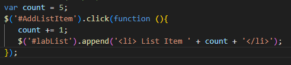
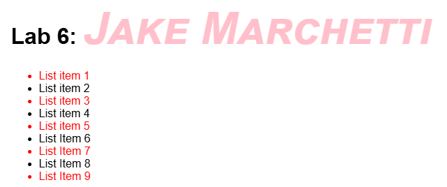
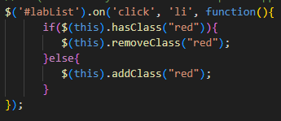

New List Function
This is the structure of an on click jquerey attribute.
It is able to be called on an indiviudal ID and adjust it per click.

Jquery CSS Alterations
These are the resultant CSS alterations from the on click jquery functions.

Using Jquery on HTML Documents
Creation of an onclick jquery function which works on a specified item of a list ID.